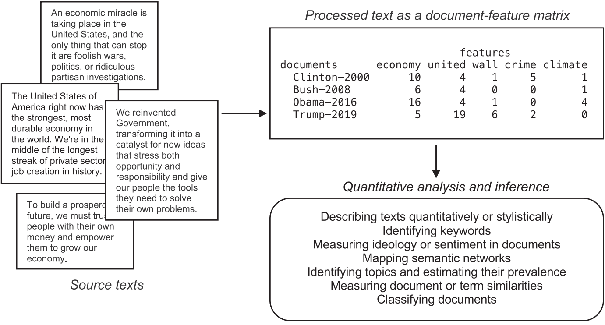
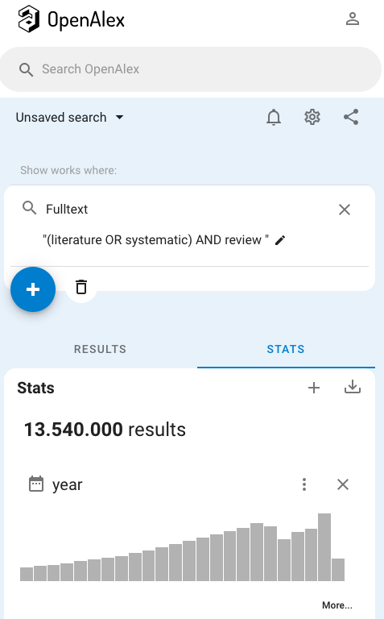
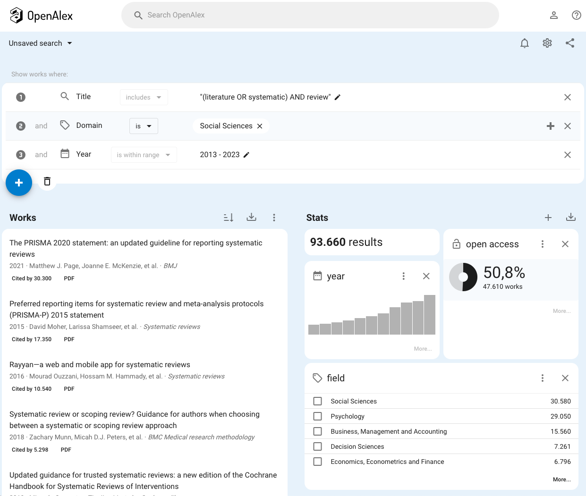

| Sitzung | Datum | Thema (synchron) | Übung (asynchron) | Dozent:in |
|---|---|---|---|---|
1 |
18.04.2024 |
Einführung & Überblick |
AM & CA |
|
📚 |
Teil 1: Systematic Review |
|||
2 |
25.04.2024 |
Einführung in Systematic Reviews I |
R-Einführung |
AM |
3 |
02.05.2024 |
Einführung in Systematic Reviews II |
R-Einführung |
AM |
09.05.2024 |
🏖️ Feiertag |
R-Einführung |
||
4 |
16.05.2024 |
Automatisierung von SRs & KI-Tools |
R-Einführung |
AM |
23.05.2024 |
🍻 WiSo-Projekt-Woche |
R-Einführung |
||
5 |
04.06.2024 |
🍕 Gastvortrag: Prof. Dr. Emese Domahidi |
R-Einführung |
ED |
6 |
06.06.2024 |
Automatisierung von SRs & KI-Tools |
R-Einführung |
AM |
💻 |
Teil 2: Text as Data & Unsupervised Machine Learning |
|||
7 |
13.06.2024 |
Introduction to Text as Data |
zur Sitzung |
CA |
8 |
20.06.2024 |
Text processing |
zur Sitzung |
CA |
9 |
27.06.2024 |
Unsupervised Machine Learning I |
zur Sitzung |
CA |
10 |
04.07.2024 |
Unsupervised Machine Learning II |
zur Sitzung |
CA & AM |
11 |
11.07.2024 |
Recap & Ausblick |
zur Sitzung |
CA & AM |
12 |
18.07.2024 |
🏁 Semesterabschluss |
zur Sitzung |
CA & AM |
Introduction to Text as Data
Sitzung 07
13.06.2024
Seminarplan
Agenda
Organisation & Koordination
Typischer Sitzungsablauf & Nutzung RStudio Server
Erst Input, dann Vertiefung
Typischer Aufbau der nächsten vier Sitzungen
Teil 1️⃣: Input (ca. 30-45 Minuten)
- Vorstellung der “theoretischen Grundlagen” inklusive zentraler Begriffe und Konzepte
- Vorstellung der Methode(n) sowie des Kontext der praktischen Anwendung
Teil 2️⃣: Praktische Anwendung (ca. 45-60 Minuten)
- Vertiefung der Inhalte durch Bearbeitung kleiner Aufgaben, entweder in Einzel- oder Gruppenarbeit
- Aufgaben zur Arbeit mit R, die im Kurs angefangen aber (vermutlich) außerhalb der Sitzung abgeschlossen werden
Bitte RStudio Server benutzen!
Information zur Nutzung des RStudio Servers während der Sitzung
⏰ Zur Erinnerung:
- Funktion der RStudio-Projekte für die praktische Anwendung in Serverumgebung getestet
- Nutzung des RStudio Servers vermeidet aufwendiges & zeitraubendes Trouble-Shooting
ℹ️ Infos zum RStudio Server:
- Nutzung nur über W-LAN der FAU (ggf. mit aktivem VPN) möglich
- Verfügbar unter: http://10.204.20.178:8787
- Zugangsdaten auf Teams
Bei Problemen: Fragen in den Teams-Kanal!
Anything else?
Weitere Fragen zum Ablauf oder zur Nutzung des RStudio Servers
A short introduction to Text as Data
Was ist Text as Data und warum ist es (für uns) relevant?
Was versteht ihr unter Text as Data?
Bitte nehmt an einer kurzen Umfrage teil
Bitte scannt den QR-Code oder nutzt den folgenden Link für die Teilnahme an einer kurzen Umfrage:
Temporary Access Code: 8113 5474
01:00
Ergebnis
Altes Phänomen, neue Dimension
Hintergrund zu dem Phänomen Text as Data

- Lange Tradition der Text- und Inhaltsanalyse
- Neue Chancen & Herausforderungen durch explosionsartige Vergrößerung des (Text-)Datenaufkommen und deren Verfügbarkeit in den letzten Jahren (Websites, Plattformen & Digitalisierung) Verfügbarkeit von (neuen) Datenquellen als Resultat der Digitalisierung
From text to data to data analysis
Transformation als essenzieller Bestandteil von Text as Data (Curini & Franzese, 2020)
Text as Data meets Reviews
Welche Rolle spielt Text as Data bei Literaturreviews?
Review über Literaturreviews
Grundidee, Ziel und Schwerpunkte und der kommenden Sitzungen zu Text as data
- Idee: Überblick über Literatur zu Literaturüberblicken verschaffen
- Ziel: Durchführung einer Kombination aus (elaboriertem) Scoping Search & Scoping Review
- Fokus: Computergestütze Umsetzung möglichst vieler Bestandteile des Review-Workflows, wie z.B.:
- Eigene Datenerhebung via (OpenAlex-)API
- Oberflächliche bibliometrische Analyse (zur Datenexploration und -bereinigung)
- Analye der Abstracts mit Hilfe von unüberwachtem Machine Learning (Topic Modeling)
Was war das nochmal?
Zur Erinnerung: Definition von Scoping Search und Scoping Review
🔎 Scoping searches …
- schnelle explorative Suche, die sich auf bestimmtes Konzept konzentriert
- sind oft Teil der Suchstringentwicklung
- sind nicht ausreichend für ein systematic review
… Scoping Review 📋
- eine spezifische Form eines literature reviews
- map a vast body of research literature in a field of interest in terms of the volume, nature, and characteristics of the primary research (Pham et al., 2014)
- do not aim to produce a critically appraised and synthesised result/answer to a particular question, [they] rather aim to provide an overview or map of the evidence (Munn et al., 2018)
What we (do not) do
Disclaimer zum Inhalt und der Zielsetzung des Sitzungen zu Text as Data
❌ Kein vollständig dokumentiertes Scoping Review, dass alle notwendigen (SALSA-)Schritte in vollem Umfang und nach wissenschaftlichen Standarts durchläuft
❌ Keine umfassendes Einführung in die Textanalyse mit R
✅ Exemplarische Darstellung einzelner Schritte des Workflows, mit Fokus auf die computergestützte Umsetzung
✅ Überblick über verschiedene Verfahren, mit Schwerpunkt auf Methoden, die im Kontext von Literaturreviews notwendig und nützlich sind
R in the real world
Kontext: OpenAlex als Datengrundlage für ein computergestützes Literaturreview
Wer oder was ist OpenAlex?
Kurze Vorstellung und Hintergrundinformationen zur Datenquelle (OpenAlex)

- open(-source) catalog of the world’s scholarly research system
- data is free and reusable, available via bulk download or API
- governed by a sustainable and transparent nonprofit
First scoping search
Sichtung der Daten- und Identfikation der Analysegrundlage

Eine simple Suchquery resultiert zwar in sehr vielen Treffern, bringt aber auch (praktische) Probleme mit sich:
- Deutliche Überschreibung des tägliches API-Limit beträgt 100.000 Referenzen
- “Lokale” Datenbearbeitung und -analye benötigt bei der Menge an Daten ehrhebliche Rechenkapazität
- Lösung: Optimierung der Suchquery durch Spezifizierung des Untersuchungsgegenstandes
Fine-Tuning der Search Query
Überblick über verwendete Search Query und ausgewählte deskriptive Statistiken

Link zur Suche
OpenAlex 🤝 openalexR
Zusammenspiel aus Datenbank und R-Package openalexR (Aria et al., 2024)

openalexR helps you interface with the OpenAlex API to retrieve bibliographic information about publications, authors, institutions, sources, funders, publishers, topics and concepts.
- Manueller Export von Ergebnissen mit Hilfe des Web-Interface von OpenAlex möglich, im Bulk aber umständlich
- Selbstständige Interaktion mit API ist aufwendig: Design der Query, Programmierung der Abfrage, Verarbeitung der Daten (nicht im Tabellenformat verfügbar)
- R-Package bietet niedrigschwelligere Alternative für API-Abfragen
Reproduktion der Webabfrage mit R
Abfrage, Download und Transformation der Daten mit einer Funktion
# A tibble: 93,655 × 39
id title display_name author ab publication_date relevance_score so
<chr> <chr> <chr> <list> <chr> <chr> <dbl> <chr>
1 https:… The … The PRISMA … <df> The … 2021-03-29 1625. BMJ
2 https:… Pref… Preferred r… <df> Syst… 2015-01-01 1340. Syst…
3 https:… Rayy… Rayyan—a we… <df> Synt… 2016-12-01 1314. Syst…
4 https:… Syst… Systematic … <df> Scop… 2018-11-19 990. BMC …
5 https:… Upda… Updated gui… <df> On a… 2019-10-03 963. Coch…
# ℹ 93,650 more rows
# ℹ 31 more variables: so_id <chr>, host_organization <chr>, issn_l <chr>,
# url <chr>, pdf_url <chr>, license <chr>, version <chr>, first_page <chr>,
# last_page <chr>, volume <chr>, issue <chr>, is_oa <lgl>,
# is_oa_anywhere <lgl>, oa_status <chr>, oa_url <chr>,
# any_repository_has_fulltext <lgl>, language <chr>, grants <list>,
# cited_by_count <int>, counts_by_year <list>, publication_year <int>, …Das Ergebnis der Abfrage
Flüchtiger Blick auf den R-Datensatz inklusive erster Qualtiätsprüfung
Typische Überprüfungen
- Wie viele Fälle sind enthalten? Wie viele Variablen? Sind die Variablennamen aussagekräftig?
- Welchen Typ hat jede Variable, z. B. numerisch, kategorisch, logisch?
Rows: 93,655
Columns: 39
$ id <chr> "https://openalex.org/W3118615836", "https…
$ title <chr> "The PRISMA 2020 statement: an updated gui…
$ display_name <chr> "The PRISMA 2020 statement: an updated gui…
$ author <list> [<data.frame[26 x 12]>], [<data.frame[8 x…
$ ab <chr> "The Preferred Reporting Items for Systema…
$ publication_date <chr> "2021-03-29", "2015-01-01", "2016-12-01", …
$ relevance_score <dbl> 1625.1708, 1340.1902, 1314.3904, 990.4521,…
$ so <chr> "BMJ", "Systematic reviews", "Systematic r…
$ so_id <chr> "https://openalex.org/S4393917726", "https…
$ host_organization <chr> NA, "BioMed Central", "BioMed Central", "B…
$ issn_l <chr> "1756-1833", "2046-4053", "2046-4053", "14…
$ url <chr> "https://doi.org/10.1136/bmj.n71", "https:…
$ pdf_url <chr> "https://www.bmj.com/content/bmj/372/bmj.n…
$ license <chr> "cc-by", "cc-by", "cc-by", "cc-by", NA, "c…
$ version <chr> "publishedVersion", "publishedVersion", "p…
$ first_page <chr> "n71", NA, NA, NA, NA, "167", "g7647", "93…
$ last_page <chr> "n71", NA, NA, NA, NA, "176", "g7647", "11…
$ volume <chr> NA, "4", "5", "18", NA, "84", "349", "39",…
$ issue <chr> NA, "1", "1", "1", NA, "3", "jan02 1", "1"…
$ is_oa <lgl> TRUE, TRUE, TRUE, TRUE, FALSE, TRUE, TRUE,…
$ is_oa_anywhere <lgl> TRUE, TRUE, TRUE, TRUE, TRUE, TRUE, TRUE, …
$ oa_status <chr> "hybrid", "gold", "gold", "gold", "green",…
$ oa_url <chr> "https://www.bmj.com/content/bmj/372/bmj.n…
$ any_repository_has_fulltext <lgl> TRUE, TRUE, TRUE, TRUE, TRUE, FALSE, TRUE,…
$ language <chr> "en", "en", "en", "en", "en", "en", "en", …
$ grants <list> NA, NA, NA, NA, NA, NA, NA, NA, NA, <"htt…
$ cited_by_count <int> 30303, 17347, 10540, 5298, 5664, 2657, 909…
$ counts_by_year <list> [<data.frame[5 x 2]>], [<data.frame[11 x …
$ publication_year <int> 2021, 2015, 2016, 2018, 2019, 2015, 2015, …
$ cited_by_api_url <chr> "https://api.openalex.org/works?filter=cit…
$ ids <list> <"https://openalex.org/W3118615836", "htt…
$ doi <chr> "https://doi.org/10.1136/bmj.n71", "https:…
$ type <chr> "article", "article", "article", "article"…
$ referenced_works <list> <"https://openalex.org/W1528251861", "htt…
$ related_works <list> <"https://openalex.org/W4234875088", "htt…
$ is_paratext <lgl> FALSE, FALSE, FALSE, FALSE, FALSE, FALSE, …
$ is_retracted <lgl> FALSE, FALSE, FALSE, FALSE, FALSE, FALSE, …
$ concepts <list> [<data.frame[20 x 5]>], [<data.frame[18 x…
$ topics <list> [<tbl_df[12 x 5]>], [<tbl_df[12 x 5]>], […Wichtigkeit von Gewissenhaftigkeit
Gute Gewohnheiten helfen bei Qualitätsprüfung und Datenverarbeitung
Praktische Empfehlungen
- Einheitlicher Code-Style, Bearbeitungsschritte kommentieren
- Veränderungen in neuen Datensatz speichern
Streben nach:
Bitte vermeiden:
Ein Datensatz im Datensatz
Exkurs zu verschachtelten (nested) Daten und Möglichkeiten zur Verabeitung in R
- Besonderheit: Informationen zu (Themen-)Katalogisierung als Liste im Datensatz
[[1]]
# A tibble: 12 × 5
i score name id display_name
<int> <dbl> <chr> <chr> <chr>
1 1 0.999 topic https://openalex.org/T10206 Methods for Evidenc…
2 1 0.999 subfield https://openalex.org/subfields/1804 Statistics, Probabi…
3 1 0.999 field https://openalex.org/fields/18 Decision Sciences
4 1 0.999 domain https://openalex.org/domains/2 Social Sciences
5 2 0.983 topic https://openalex.org/T10416 Epidemiology and Im…
6 2 0.983 subfield https://openalex.org/subfields/2713 Epidemiology
7 2 0.983 field https://openalex.org/fields/27 Medicine
8 2 0.983 domain https://openalex.org/domains/4 Health Sciences
9 3 0.946 topic https://openalex.org/T12443 The Delphi Method i…
10 3 0.946 subfield https://openalex.org/subfields/3312 Sociology and Polit…
11 3 0.946 field https://openalex.org/fields/33 Social Sciences
12 3 0.946 domain https://openalex.org/domains/2 Social Sciences
[[2]]
# A tibble: 12 × 5
i score name id display_name
<int> <dbl> <chr> <chr> <chr>
1 1 0.999 topic https://openalex.org/T10206 Methods for Evidenc…
2 1 0.999 subfield https://openalex.org/subfields/1804 Statistics, Probabi…
3 1 0.999 field https://openalex.org/fields/18 Decision Sciences
4 1 0.999 domain https://openalex.org/domains/2 Social Sciences
5 2 0.982 topic https://openalex.org/T12443 The Delphi Method i…
6 2 0.982 subfield https://openalex.org/subfields/3312 Sociology and Polit…
7 2 0.982 field https://openalex.org/fields/33 Social Sciences
8 2 0.982 domain https://openalex.org/domains/2 Social Sciences
9 3 0.957 topic https://openalex.org/T10416 Epidemiology and Im…
10 3 0.957 subfield https://openalex.org/subfields/2713 Epidemiology
11 3 0.957 field https://openalex.org/fields/27 Medicine
12 3 0.957 domain https://openalex.org/domains/4 Health Sciences
[[3]]
# A tibble: 4 × 5
i score name id display_name
<int> <dbl> <chr> <chr> <chr>
1 1 0.937 topic https://openalex.org/T10206 Methods for Evidence…
2 1 0.937 subfield https://openalex.org/subfields/1804 Statistics, Probabil…
3 1 0.937 field https://openalex.org/fields/18 Decision Sciences
4 1 0.937 domain https://openalex.org/domains/2 Social Sciences
[[4]]
# A tibble: 12 × 5
i score name id display_name
<int> <dbl> <chr> <chr> <chr>
1 1 0.997 topic https://openalex.org/T10206 Methods for Evidenc…
2 1 0.997 subfield https://openalex.org/subfields/1804 Statistics, Probabi…
3 1 0.997 field https://openalex.org/fields/18 Decision Sciences
4 1 0.997 domain https://openalex.org/domains/2 Social Sciences
5 2 0.981 topic https://openalex.org/T12443 The Delphi Method i…
6 2 0.981 subfield https://openalex.org/subfields/3312 Sociology and Polit…
7 2 0.981 field https://openalex.org/fields/33 Social Sciences
8 2 0.981 domain https://openalex.org/domains/2 Social Sciences
9 3 0.973 topic https://openalex.org/T10416 Epidemiology and Im…
10 3 0.973 subfield https://openalex.org/subfields/2713 Epidemiology
11 3 0.973 field https://openalex.org/fields/27 Medicine
12 3 0.973 domain https://openalex.org/domains/4 Health Sciences
[[5]]
# A tibble: 12 × 5
i score name id display_name
<int> <dbl> <chr> <chr> <chr>
1 1 0.993 topic https://openalex.org/T10206 Methods for Evidenc…
2 1 0.993 subfield https://openalex.org/subfields/1804 Statistics, Probabi…
3 1 0.993 field https://openalex.org/fields/18 Decision Sciences
4 1 0.993 domain https://openalex.org/domains/2 Social Sciences
5 2 0.964 topic https://openalex.org/T11744 Implementation of E…
6 2 0.964 subfield https://openalex.org/subfields/3600 General Health Prof…
7 2 0.964 field https://openalex.org/fields/36 Health Professions
8 2 0.964 domain https://openalex.org/domains/4 Health Sciences
9 3 0.954 topic https://openalex.org/T12664 Development and Eva…
10 3 0.954 subfield https://openalex.org/subfields/2739 Public Health, Envi…
11 3 0.954 field https://openalex.org/fields/27 Medicine
12 3 0.954 domain https://openalex.org/domains/4 Health Sciences
[[6]]
# A tibble: 12 × 5
i score name id display_name
<int> <dbl> <chr> <chr> <chr>
1 1 0.993 topic https://openalex.org/T10475 Role of Positive Em…
2 1 0.993 subfield https://openalex.org/subfields/3207 Social Psychology
3 1 0.993 field https://openalex.org/fields/32 Psychology
4 1 0.993 domain https://openalex.org/domains/2 Social Sciences
5 2 0.992 topic https://openalex.org/T10804 Health Economics an…
6 2 0.992 subfield https://openalex.org/subfields/2002 Economics and Econo…
7 2 0.992 field https://openalex.org/fields/20 Economics, Economet…
8 2 0.992 domain https://openalex.org/domains/2 Social Sciences
9 3 0.984 topic https://openalex.org/T12947 Salutogenesis and S…
10 3 0.984 subfield https://openalex.org/subfields/3600 General Health Prof…
11 3 0.984 field https://openalex.org/fields/36 Health Professions
12 3 0.984 domain https://openalex.org/domains/4 Health Sciences Entpacken der Schachteln steigert die Fallzahl
Exkurs zu verschachtelten (nested) Daten und Möglichkeiten zur Verabeitung in R
Rows: 942,560
Columns: 45
$ id <chr> "https://openalex.org/W3118615836", "https…
$ title <chr> "The PRISMA 2020 statement: an updated gui…
$ display_name <chr> "The PRISMA 2020 statement: an updated gui…
$ author <list> [<data.frame[26 x 12]>], [<data.frame[26 …
$ ab <chr> "The Preferred Reporting Items for Systema…
$ publication_date <chr> "2021-03-29", "2021-03-29", "2021-03-29", …
$ relevance_score <dbl> 1625.171, 1625.171, 1625.171, 1625.171, 16…
$ so <chr> "BMJ", "BMJ", "BMJ", "BMJ", "BMJ", "BMJ", …
$ so_id <chr> "https://openalex.org/S4393917726", "https…
$ host_organization <chr> NA, NA, NA, NA, NA, NA, NA, NA, NA, NA, NA…
$ issn_l <chr> "1756-1833", "1756-1833", "1756-1833", "17…
$ url <chr> "https://doi.org/10.1136/bmj.n71", "https:…
$ pdf_url <chr> "https://www.bmj.com/content/bmj/372/bmj.n…
$ license <chr> "cc-by", "cc-by", "cc-by", "cc-by", "cc-by…
$ version <chr> "publishedVersion", "publishedVersion", "p…
$ first_page <chr> "n71", "n71", "n71", "n71", "n71", "n71", …
$ last_page <chr> "n71", "n71", "n71", "n71", "n71", "n71", …
$ volume <chr> NA, NA, NA, NA, NA, NA, NA, NA, NA, NA, NA…
$ issue <chr> NA, NA, NA, NA, NA, NA, NA, NA, NA, NA, NA…
$ is_oa <lgl> TRUE, TRUE, TRUE, TRUE, TRUE, TRUE, TRUE, …
$ is_oa_anywhere <lgl> TRUE, TRUE, TRUE, TRUE, TRUE, TRUE, TRUE, …
$ oa_status <chr> "hybrid", "hybrid", "hybrid", "hybrid", "h…
$ oa_url <chr> "https://www.bmj.com/content/bmj/372/bmj.n…
$ any_repository_has_fulltext <lgl> TRUE, TRUE, TRUE, TRUE, TRUE, TRUE, TRUE, …
$ language <chr> "en", "en", "en", "en", "en", "en", "en", …
$ grants <list> NA, NA, NA, NA, NA, NA, NA, NA, NA, NA, N…
$ cited_by_count <int> 30303, 30303, 30303, 30303, 30303, 30303, …
$ counts_by_year <list> [<data.frame[5 x 2]>], [<data.frame[5 x 2…
$ publication_year <int> 2021, 2021, 2021, 2021, 2021, 2021, 2021, …
$ cited_by_api_url <chr> "https://api.openalex.org/works?filter=cit…
$ ids <list> <"https://openalex.org/W3118615836", "htt…
$ doi <chr> "https://doi.org/10.1136/bmj.n71", "https:…
$ type <chr> "article", "article", "article", "article"…
$ referenced_works <list> <"https://openalex.org/W1528251861", "htt…
$ related_works <list> <"https://openalex.org/W4234875088", "htt…
$ is_paratext <lgl> FALSE, FALSE, FALSE, FALSE, FALSE, FALSE, …
$ is_retracted <lgl> FALSE, FALSE, FALSE, FALSE, FALSE, FALSE, …
$ concepts <list> [<data.frame[20 x 5]>], [<data.frame[20 x…
$ topics_i <int> 1, 1, 1, 1, 2, 2, 2, 2, 3, 3, 3, 3, 1, 1, …
$ topics_score <dbl> 0.9993, 0.9993, 0.9993, 0.9993, 0.9832, 0.…
$ topics_name <chr> "topic", "subfield", "field", "domain", "t…
$ topics_id <chr> "https://openalex.org/T10206", "https://op…
$ topics_display_name <chr> "Methods for Evidence Synthesis in Researc…
$ publication_year_fct <fct> 2021, 2021, 2021, 2021, 2021, 2021, 2021, …
$ type_fct <fct> article, article, article, article, articl…Deskriptive Statistiken zur Datenabfrage
Rekonstruktion und Erweiterung des OpenAlex Web-Dashboards mit R
Deskriptive Statistiken zur Datenabfrage
Rekonstruktion und Erweiterung des OpenAlex Web-Dashboards mit R
Im Fokus:
- Publikationen im Zeitverlauf
- 🔍 Foschungsfelder
- Relevante Publikationen
- Lageparameter
review_works_correct %>%
unnest(topics, names_sep = "_") %>%
filter(topics_name == "field") %>%
filter(topics_i == 1) %>%
sjmisc::frq(topics_display_name, sort.frq = "desc")topics_display_name <character>
# total N=93655 valid N=93655 mean=4.41 sd=1.62
Value | N | Raw % | Valid % | Cum. %
----------------------------------------------------------------------
Social Sciences | 30580 | 32.65 | 32.65 | 32.65
Psychology | 29054 | 31.02 | 31.02 | 63.67
Business, Management and Accounting | 15558 | 16.61 | 16.61 | 80.29
Decision Sciences | 7261 | 7.75 | 7.75 | 88.04
Economics, Econometrics and Finance | 6796 | 7.26 | 7.26 | 95.30
Arts and Humanities | 4406 | 4.70 | 4.70 | 100.00
<NA> | 0 | 0.00 | <NA> | <NA>Deskriptive Statistiken zur Datenabfrage
Rekonstruktion und Erweiterung des OpenAlex Web-Dashboards mit R
Im Fokus:
- Publikationen im Zeitverlauf
- Foschungsfelder
- 🔍 Relevante Publikationen
- Lageparameter
review_works_correct %>%
arrange(desc(relevance_score)) %>%
select(publication_year_fct, relevance_score, title) %>%
head(5) %>%
gt::gt()| publication_year_fct | relevance_score | title |
|---|---|---|
| 2021 | 1625.1708 | The PRISMA 2020 statement: an updated guideline for reporting systematic reviews |
| 2015 | 1340.1902 | Preferred reporting items for systematic review and meta-analysis protocols (PRISMA-P) 2015 statement |
| 2016 | 1314.3904 | Rayyan—a web and mobile app for systematic reviews |
| 2018 | 990.4521 | Systematic review or scoping review? Guidance for authors when choosing between a systematic or scoping review approach |
| 2019 | 962.6738 | Updated guidance for trusted systematic reviews: a new edition of the Cochrane Handbook for Systematic Reviews of Interventions |
Deskriptive Statistiken zur Datenabfrage
Rekonstruktion und Erweiterung des OpenAlex Web-Dashboards mit R
Im Fokus:
- Publikationen im Zeitverlauf
- Foschungsfelder
- Relevante Publikationen
- 🔍 Lageparameter
review_works_correct %>%
select(where(is.numeric)) %>%
datawizard::describe_distribution() %>%
print_html()| Variable | Mean | SD | IQR | Min | Max | Skewness | Kurtosis | n | n_Missing |
|---|---|---|---|---|---|---|---|---|---|
| relevance_score | 31.73 | 42.51 | 36.48 | 1.17 | 1625.17 | 4.75 | 67.87 | 93655 | 0 |
| cited_by_count | 18.33 | 146.36 | 10.00 | 0.00 | 30303.00 | 123.44 | 22236.55 | 93655 | 0 |
| publication_year | 2019.40 | 2.97 | 5.00 | 2013.00 | 2023.00 | -0.58 | -0.77 | 93655 | 0 |
📋 Hands on working with R
Verschiedene R-Übungsaufgaben zum Inhalt der heutigen Sitzung
🧪 And now … you: Übung & Eingrenzung
Next Steps: Wiederholung der R-Grundlagen an OpenAlex-Daten
- Laden Sie die auf StudOn bereitgestellten Dateien für die Sitzungen herunter
- Laden Sie die .zip-Datei in Ihren RStudio Workspace
- Navigieren Sie zu dem Ordner, in dem die Datei
ps_24_binder.Rprojliegt. Öffnen Sie diese Datei mit einem Doppelklick. Nur dadurch ist gewährleistet, dass alle Dependencies korrekt funktionieren. - Öffnen Sie die Datei
exercise-07.qmdim Ordnerexercisesund lesen Sie sich gründlich die Anweisungen durch. - Tipp: Sie finden alle in den Folien verwendeten Code-Bausteine in der Datei showcase.qmd (für den “rohen” Code) oder showcase.html (mit gerenderten Ausgaben).